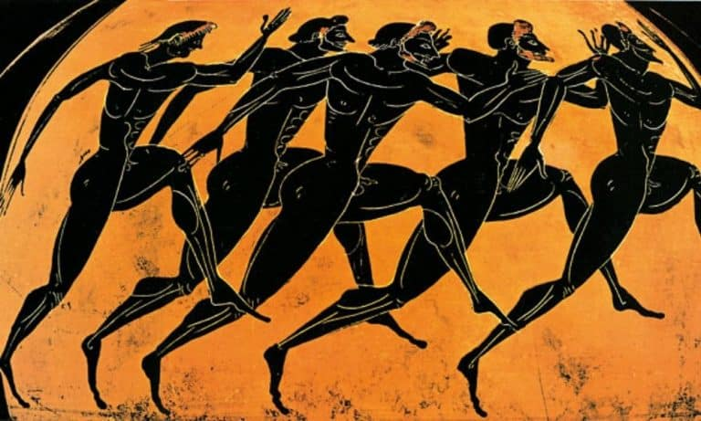
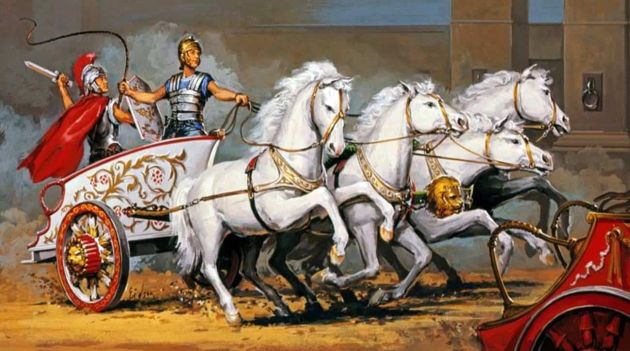
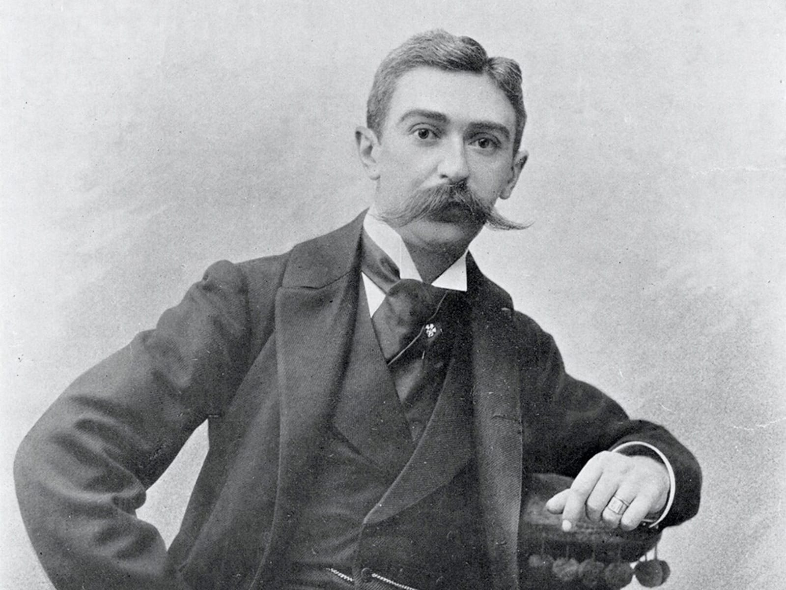
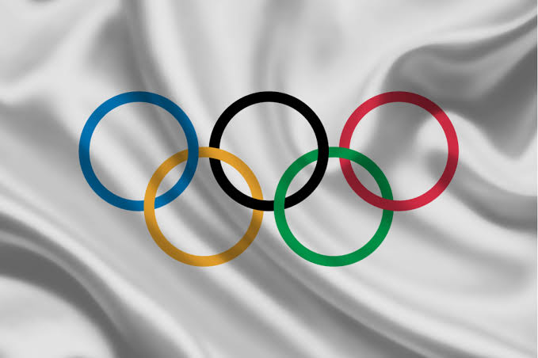
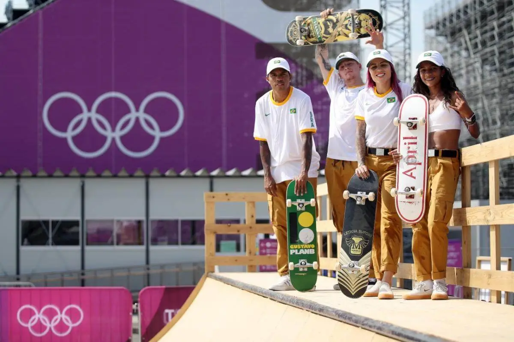

OS JOGOS OLÍMPICOS DA ANTIGUIDADE
As Olimpíadas tiveram origem na Grécia por volta de 776 a.C., o nome “Olimpíada” foi dado em homenagem a cidade onde os jogos eram sediados, Olímpia. Na Antiguidade, as Olimpíadas consistiam em competições que abrangiam modalidades como: atletismo, lutas, corrida de bigas e o pentatlo.

Realizadas entre atletas das cidades-estado da Grécia, as Olimpíadas tinham como intuito homenagear os deuses gregos e propagar a paz entre as cidades do país. Nessa época, somente os homens participavam e assistiam aos jogos, onde o vencedor recebia uma coroa de louro ou de folhas de oliveira.
Os Jogos Olímpicos da Antiguidade continuaram por quase 12 séculos até serem abolidos pelo imperador romano Teodósio I em 393 d.C., como parte de uma campanha para impor o cristianismo como religião oficial do Império Romano.

OS JOGOS OLÍMPICOS DA ERA MODERNA
Os Jogos Olímpicos da Era Moderna, também conhecidos como Olimpíadas Modernas, foram criados por Pierre de Frédy (1863-1937), mais conhecido por Pierre de Coubertin, um historiador e pedagogo francês.

A ideia de Pierre de Coubertin de retomar os Jogos Olímpicos na era moderna era buscar a paz entre as nações, unindo todos em uma celebração esportiva. Acreditando nessa possibilidade, Pierre apelou a vários países que aderissem ao evento e fundou o Comitê Olímpico Internacional (COI), em 1894.
Em 1896, aconteceu a primeira edição dos Jogos Olímpicos em Atenas, como forma de homenagear os Jogos Olímpicos da Antiguidade. Com a finalidade de estimular a competição saudável entre os povos, diversos países começaram a participar das Olimpíadas, que se tornou um dos principais eventos esportivos do mundo.
Em 1913, Pierre de Courbetin elaborou a bandeira olímpica. Essa bandeira, simbolizando a união das partes do mundo pelo Olimpismo, ela é composta por um fundo branco simbolizando a paz e cinco anéis interligados, cada um de uma cor diferente, simbolizando os respectivos continentes: azul para a Europa, amarelo para a Ásia, preto para a África, verde para a Oceania e vermelho para as Américas.

ONDE OCORRERAM OS JOGOS OLÍMPICOS MODERNOS?
As olimpíadas acontecem a cada quatro anos, as cidades eleitas para sediar os jogos passam por um processo seletivo organizado pelo Comitê Olímpico Internacional.
Os locais escolhidos para as Olimpíadas serem realizadas, desde o seu princípio até os dias atuais, são os seguintes:
- 1896: Atenas, Grécia
- 1900: Paris, França
- 1904: St. Louis, Estados Unidos
- 1908: Londres, Grã-Bretanha
- 1912: Estocolmo, Suécia
- 1916: Cancelada devido a primeira guerra mundial
- 1920: Antuérpia, Bélgica
- 1924: Paris, França
- 1928: Amsterdã, Holanda
- 1932: Los Angeles, Estados Unidos
- 1936: Berlim, Alemanha
- 1940: Cancelada devido a segunda guerra mundial
- 1944: Cancelada devido a segunda guerra mundial
- 1948: Londres, Grã-Bretanha
- 1952: Helsinque, Finlândia
- 1956: Melbourne, Austrália
- 1960: Roma, Itália
- 1964: Tóquio, Japão
- 1968: Cidade do México, México
- 1972: Munique, Alemanha
- 1976: Montreal, Canadá
- 1980: Moscou, União Soviética
- 1984: Los Angeles, Estados Unidos
- 1988: Seul, Coreia do Sul
- 1992: Barcelona, Espanha
- 1996: Atlanta, Estados Unidos
- 2000: Sydney, Austrália
- 2004: Atenas, Grécia
- 2008: Pequim, China
- 2012: Londres, Grã-Bretanha
- 2016: Rio de Janeiro, Brasil
- 2020: Tóquio, Japão (adiada para 2021 devido a pandemia da COVID-19)
- 2024: Paris, França
- 2028: Los Angeles, Estados Unidos
- 2032: Brisbane, Austrália
A ASCENSÃO DO SKATE NAS OLIMPÍADAS
O skate estreou como esporte olímpico nos Jogos de Tóquio 2020, com o objetivo de modernizar as Olimpíadas e atrair um público mais jovem. A modalidade foi dividida em duas categorias, tanto para homens quanto para mulheres.
A modalidade do skate foi onde vários atletas brasileiros se destacaram, garantindo várias medalhas para o nosso país.
